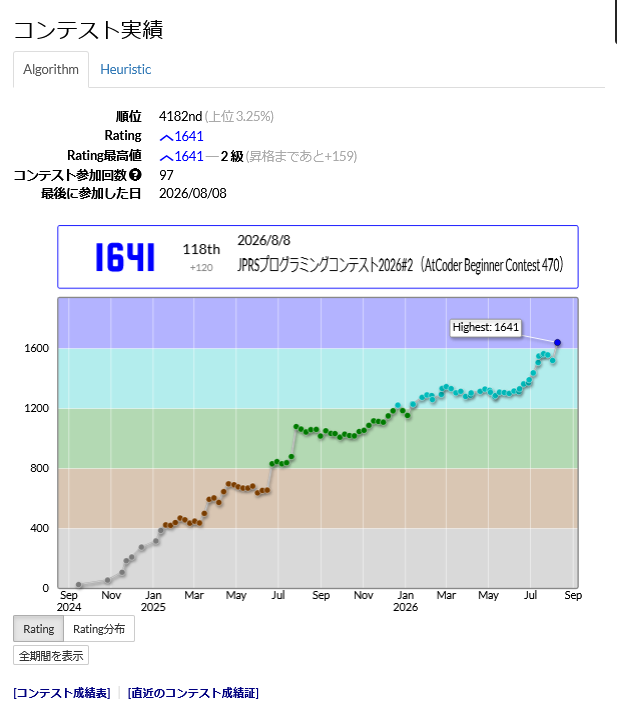
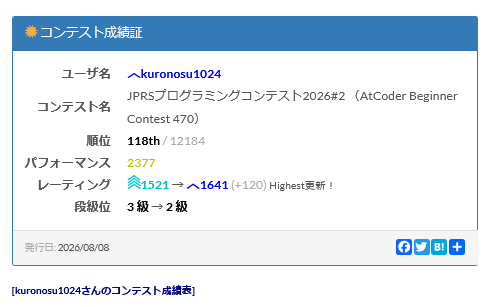
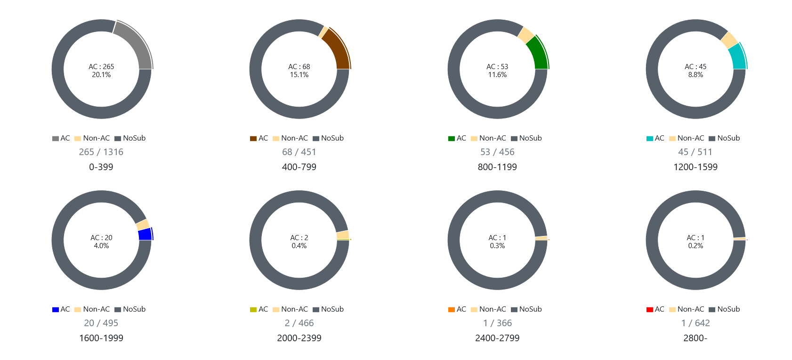
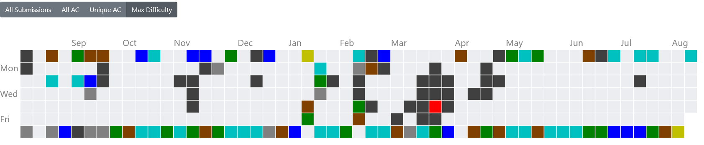

高校生である間に青入りたかったからまじでうれしい
これで安心して受験に臨めますよ
当記事（？）では、せっかくなので私の入青までに得た経験の内容を書き留めておこうと思います
隙自語(読み飛ばしてOK)
わしが競プロと出会ったのは高校一年生の夏のことじゃった・・・入学当初（それ以前？）からパソコンを使った何かしらの活動及び創作がしたいなと思っていたので、情報部（と数学部）という部活動に加入。
それから大したことをしないまま7月になった頃、ある友人に誘われてSuperComputingContestにチームの一員として出ることになった。
当時興味こそあったがプログラミングの経験はほぼ0で、辛うじてscratchを触ったことがある程度だったがなぜか出ることになった（メンバーの他二人は競プロと競じゃないほうプロ経験者だった）
そこで何をしたかといえば、実装はできるわけがないのでアプローチを考えたり、コードを（頑張って）読んでデバッグしたり、desmosとかexcelで数値計算したりと今思えばあんまり競プロしてなかった
そっから本選通って、叩きのめされてからやる気が出てきて、9月頃からatcoderに参加するようになった。
とはいえ当時はコンテストに出るだけ出て精進はしてなかったし、土曜夜9:00とかいうゴールデンタイムで参加忘れも多々ありそこまで好成績って感じではなかった。
その後の2024/12/08に行われたJOI二次予選に何の奇跡かなぜか突破してしまう(当時灰coder)。 漏れを競プロに誘ってくれた恩師を差し置いて通ってしまって申し訳ないような誇らしいようなで、流石に通ってしまった以上ちゃんと向き合うべきだと考え、その冬休みぐらいから毎コンテスト欠かさず参加するようになった。（ARCやAGCも確かこの時から毎回出ている）
当然、たかが数か月コンテスト出るだけの競プロは上達しないのでJOI本選は0点でした
青までにしたこと 抽象
こう書くとなんか反感を買いそうですが、正直そんなに頑張った自覚はないです 客観的にも頑張ってないように見えると思いますこれは自分の好きなことに対する取り組み方が（多分）人と違うのが原因で、基本ハマったことは状況や昼夜を問わずずっとそのことを考えてることが多いです
結果、学校の授業中に気になってたアルゴリズムについて考えたり、解けなかった問題を寝ながら理論だけupsolveしたりとめちゃくちゃ非効率に精進していました

↑ひどい
絶対真似しないほうがいいと思います やる気があるなら効率的な精進をするに限るので
あと、自分がレベルアップのために何したかの記録が後からわからなくなるので、こういう文章を書く時にも困ります
その精進（？）の内容も特にこれといった目的や指標もなくただ「気になったことを調べる/考える」のみだったので、自分の興味のベクトルが競プロ上達のためのベクトルと近かっただけなのかも 再現性のない人生を送っております

改めてみたら酷いなこれ 一応レートは六月ぐらいから伸びてるんですけど、それが読み取れない
絶対真似しないほうがいいと思います（２）
青までにしたこと 具象
・コンテスト前
twitterやyoutubeを見て、気になった内容は（できるだけ全部）理解に努めますおすすめはevimaさんやsimasimaさん、mathneqさん 内容が面白くてわかりやすいです
これの利点は、難易度や領域に対してランダムに広く知識が増えるので、類似問題が出たときに良いアプローチを連想しやすくなります
欠点は効率が悪い
・コンテスト中
不得意orわからない問題は飛ばしたほうがいいです水色コーダーだからDは解かなければならないなどという義務に心を駆られてしまうと大抵死にます（個人の経験）
かつてはこの戦略でACF3完など意味の分からない成績をとったりしましたが、水色になってある程度知識量を得た段階でそうなることはなかったので基本飛ばし得です
飛ばし得ではないな 解けるなら解いたほうがいいです
・コンテスト後
挑んで解けなかった問題があった時に、その問題がなぜ解けなかったかは理解すべきだと思いますその原因について、
- 時間が足りなかったときは、時間をかけてでも解いておきます 一度でも解いた経験があれば、類似問題に出会ったときにより早く対処できるようになります
- 必要な知識/データ構造が足りなかったときは、それを得ておきます 難易度によってはやめたほうがいいが
- 実装力が足りなかったときは、いろんな解説とかほかの人の提出を見に行きます 「実装むず」って思った時の半分はやり方が悪くて（主観）
- それ以外の場合は、負けを認め、猛省します これをしたのは、直近ではこれとかこれ
初心者脱却のためには必須だと思う
私は困ったらkotatsugame大先生の動画を見に行きます 安心と信頼の実績
上三つに当てはまらない負けは本当に反省すべき負け（主観）
実力的に解ける問題で解けなかったならば、二度と同じ過ちを繰り返さないためにしっかりと心に刻み、深く反省するべき
と言う割には直近でこういう負けをしすぎだな 反省します
・その他、気持ちなど
人類は小さな標本から過大な解釈をしがちです（クソデカ主観）たかが2,3回勝ち負けが連続したり、いつもより大きめに負けたり、気にしがちな大抵の事象は気に留めるほどでもない
変に気にかけて気を落としたり、よくわからない精進の仕方をするぐらいなら気に留めずいつも通りの精進をするべきだと思います
現におれは入青の一回前は大分大きめに負けましたが、別にそれほど気にしなかったし、それでそのあと勝ってます
あまりにも一生負けるとか、全部忘れたのかみたいな大負けをしたときは別だと思うが、それでも、それぞれ「半年ずっと」「2色半下のperf」ぐらいでなければ別に「たまによくある事象」として処理していいと思います
結局は継続した積み重ねが実力になるので
青までにしたこと もっと具象
ライブラリ盆栽
まだそんなに増やしてないけど、したほうがいいランダムアクセスできるsetとか、二項係数とか、ACLと被るけどunionfindとかmodintとかが自前であるとなかなか助かったりする
なにより、楽しい
作問
必要性はそんなにないかもしれない利点として、「解ける確証のない問題」を自力で解く経験はかなり価値がある
レートが伸びたのが丁度作問しだした頃なので、意外と相関があるかもしれない
アークナイツ
去年（2025年）9月からやり始めて、その頃からレートがじわ伸びしているので正の相関を主張することが可能高難易度コンテンツを無理してやるとすっごい頭使うんですよこのゲーム
まじでおもろいです、やりませんか
ストーリーもすごいですよ
終わりに
一旦書くことがないなったので締めたいと思います改めて今のレートを見たときに絶妙に信じられない気持ちになるな 割と最近まで青perfなんてほぼ出てなかったので
今回の記事の誤字脱字の指摘や、内容の詳細の確認、その他依頼などあれば(受験期なので無理な時は無理ですが)何でもお受けしますのでDMでもマシュマロでもなんでも送ってください
では良き競プロライフを